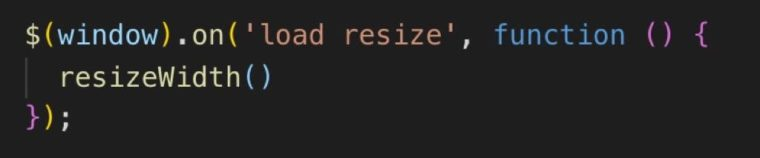

ソース内で、一致している括弧同士にわかりやすい色をつけてくれます。JavaScriptを触るときに結構重宝します。
名前の通り、コードのスペルをチェックしてくれる拡張機能です。

↑の写真だと、starrtとtwenttyfiveがミスなので「〜」が引かれています。 単純なスペルミスがすぐにわかるようになるので、入れると吉。
JavaScriptのスニペット集です。途中まで入力したら予測変換されたりします。

forと途中まで入力して、出てくるカーソルからforeachを選ぶと, foreachの基本構文が出力されたりと、

こんな感じでjavascriptが楽に書けるように。
インデントに色がついて、深さが変わるごとに違う色に変化する。

短い文章であれば目視でもチェックできますが、長文になるとチェックに時間がかかり見落としも多くなってしまいます。そんなとき、「テキスト校正くん」を利用することで、文章チェックの手間を軽減でき、文章の品質を高めることができます。